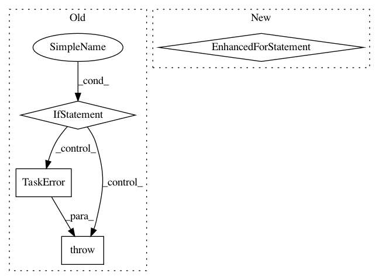

91cdde2ef79e87a9cb0d80cb55769bc23dc271cc,src/python/pants/backend/jvm/tasks/dependencies.py,Dependencies,console_output,#Dependencies#Any#,56
Before Change
def console_output(self, unused_method_argument):
for target in self.context.target_roots:
if self._is_jvm(target):
for line in self._jvm_dependencies_list(target):
yield line
elif target.is_python:
if self.is_internal_only:
raise TaskError("Unsupported option for Python target: is_internal_only: %s" %
self.is_internal_only)
if self.is_external_only:
raise TaskError("Unsupported option for Python target: is_external_only: %s" %
self.is_external_only)
for line in self._python_dependencies_list(target):
yield line
def _dep_id(self, dep):
if isinstance(dep, JarDependency):
jar = dep
if jar.rev:
After Change
for requirement in tgt.payload.requirements:
yield str(requirement.requirement)
elif isinstance(tgt.payload, JarLibraryPayload):
for jar in tgt.payload.jars:
data = dict(org=jar.org, name=jar.name, rev=jar.rev)
yield ("{org}:{name}:{rev}" if jar.rev else "{org}:{name}").format(**data)
In pattern: SUPERPATTERN
Frequency: 3
Non-data size: 4
Instances
Project Name: pantsbuild/pants
Commit Name: 91cdde2ef79e87a9cb0d80cb55769bc23dc271cc
Time: 2014-08-19
Author: john.sirois@gmail.com
File Name: src/python/pants/backend/jvm/tasks/dependencies.py
Class Name: Dependencies
Method Name: console_output
Project Name: pantsbuild/pants
Commit Name: 991b6233b442369be2310ca58fbd7c4b93f72c89
Time: 2014-12-23
Author: tinystatemachine@gmail.com
File Name: src/python/pants/backend/core/tasks/what_changed.py
Class Name: WhatChanged
Method Name: console_output
Project Name: pantsbuild/pants
Commit Name: deb2f3180a4446080087d589b24d6a66b60ed033
Time: 2014-10-08
Author: dturner@twopensource.com
File Name: src/python/pants/backend/jvm/tasks/jvmdoc_gen.py
Class Name: JvmdocGen
Method Name: _generate_individual